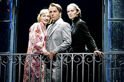
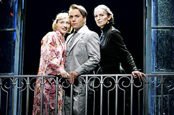
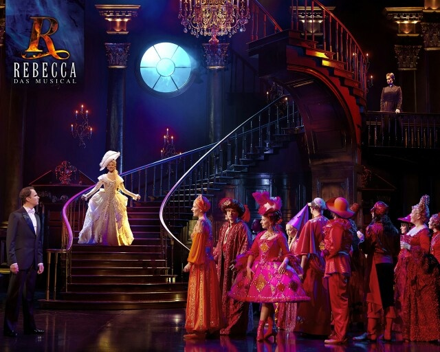
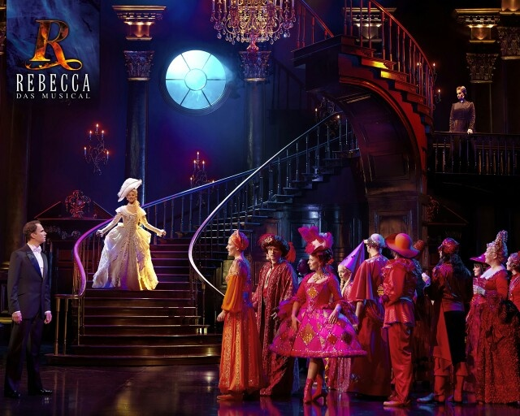
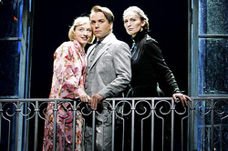
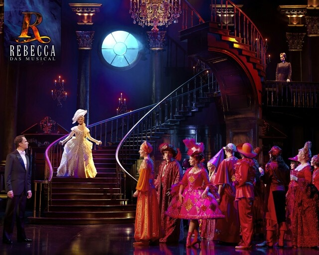
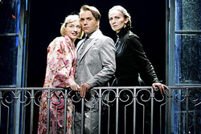
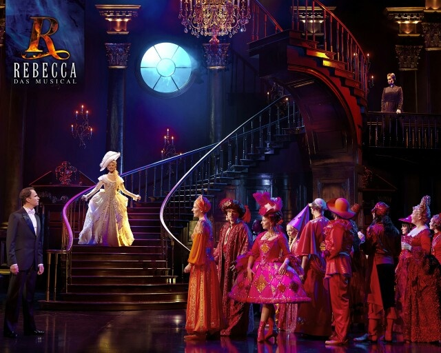

 

 



The new Mrs. de Winter, "Ich" meeting Mrs. Danvers, the housekeeper, for the first time.
Mrs. Danvers explaining what Rebecca de Winter was like before she died.
Ich, Maxim, and Mrs. Danvers gaze into the ocean that Manderley looks out upon.
Mrs. Danvers stands in Manderley as she sets it ablaze.
Ich walks down the staircase as she introduced to her ball; Maxim is waiting for her at the foot of the stairs.
An alternative version of Ich meeting Mrs. Danvers.